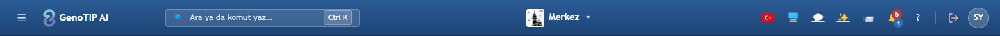
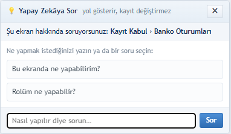
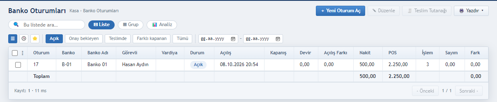
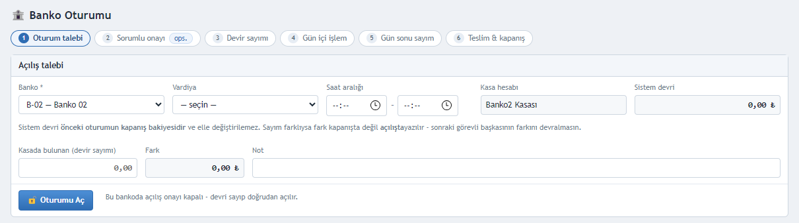
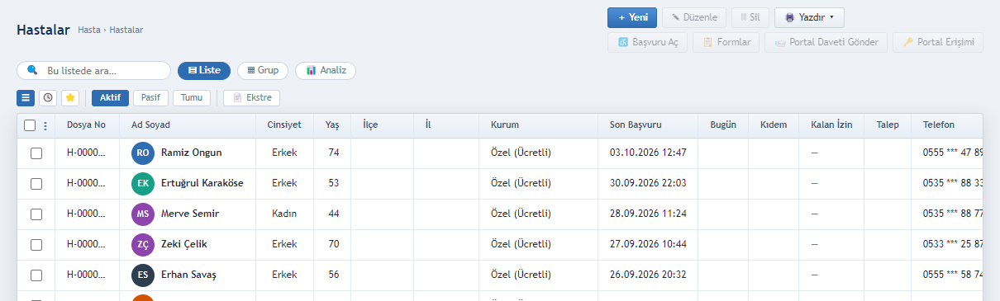
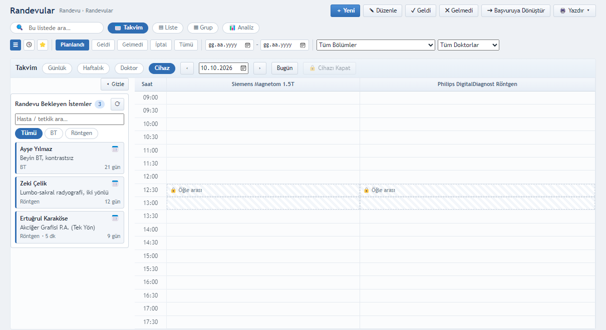
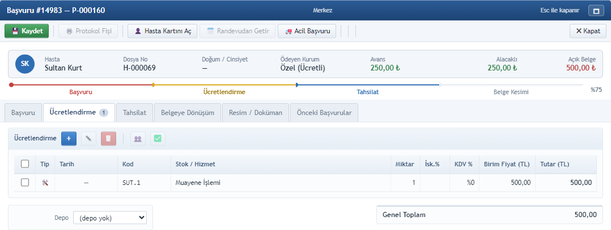
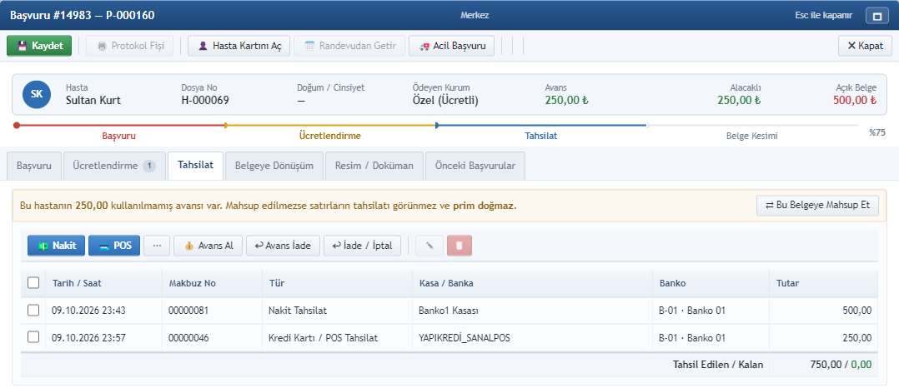
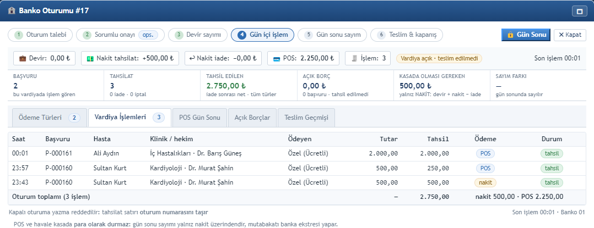
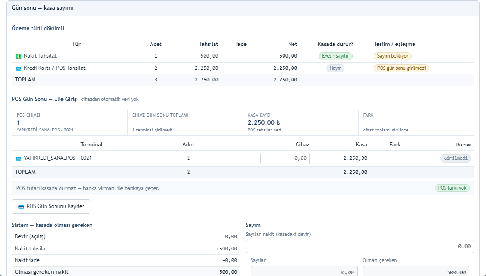

Banko görevlisi eğitimine hoş geldiniz.
Bu eğitimde bankoda bir günün işlerini sırasıyla göreceğiz: önce vardiyanızı, yani banko oturumunuzu açacağız.
Ardından hastayı bulmayı ya da kaydetmeyi, randevu vermeyi ve hasta geldiğinde kabulünü yapmayı göreceğiz.
Son olarak ücreti yazıp tahsilatı almayı ve akşam kasayı sayıp teslim etmeyi öğreneceğiz.
İstediğiniz an boşluk tuşuyla duraklatabilir, ok tuşlarıyla ileri ya da geri gidebilirsiniz.
Bankoda gününüz altı adımdan oluşur.
Sabah önce kasayı sayıp banko oturumunuzu, yani vardiyanızı açarsınız.
Gün içinde telefonla ya da yerinde randevu verirsiniz; hasta geldiğinde kabulünü yapar ve başvurusunu açarsınız.
Başvuruya hizmet ücretlerini yazar, hasta payını nakit ya da POS ile tahsil edersiniz.
Akşam nakdi sayar, fark varsa açıklar ve kasayı tutanakla teslim edersiniz.
Her tahsilat sizin oturum numaranızı taşır; böylece kimin, hangi kasadan, ne aldığı her gün netleşir.

1 2
3 4 5Sisteme size verilen kullanıcı adı ve parolayla girersiniz; sol menüde yalnızca rolünüzün yetkili olduğu ekranlar görünür.
Üst şeritteki arama kutusu komut paletidir: Kontrol ve K tuşlarına basıp ekran adını yazarak hızla gidebilirsiniz.
Sağ üstteki soru işareti düğmesi, açık olan ekranın yardımını açar.
Sağ alttaki Yapay Zekâya Sor düğmesi, bulunduğunuz ekranı bilen bir asistandır; hazır sorulardan birini seçebilir ya da kendi sorunuzu yazabilirsiniz.
Üst şeritte Demo ya da Eğitim Ortamı etiketi görüyorsanız deneme kurulumundasınız; etiket yoksa girdiğiniz her kayıt gerçektir.

1
6 2 2 3 4 5Vardiyaya başlamak için Kayıt Kabul menüsünden Banko Oturumları ekranını açın ve Yeni Oturum Aç düğmesine basın.
Açılan formda önce bankonuzu, sonra vardiyanızı seçin; vardiya seçilince saat aralığı kendiliğinden önerilir.
Sistem devri, bir önceki vardiyanın kasada bıraktığı tutardır ve elle değiştirilemez.
Kasadaki parayı sayıp devir sayımı alanına yazın; fark çıkarsa nedenini not alanına açıklayın.
Son olarak Oturumu Aç düğmesine basın. Açılış onayı açık olan bankoda düğme Onaya Gönder olur ve sorumlu onaylayana kadar tahsilat alınamaz.
Üstteki adım rozetleri, vardiyanızın hangi aşamada olduğunu her zaman gösterir.

1 2 3 4Hasta geldiğinde ya da aradığında önce Hasta Listesi'nde arama yapın: ad, dosya numarası ya da kimlik numarası yazmanız yeterli.
Hasta bulunduysa satıra çift tıklayın ya da Düzenle düğmesine basın; yeni kart açmayın.
Bulunamadıysa Yeni düğmesiyle kart açın; kimlik numarası, ad soyad ve telefonun yanında doğum tarihi ile cinsiyet de zorunludur.
Hasta bir kurumdan ya da sigortadan yararlanıyorsa, kartın Kurum / Ödeyen sekmesine poliçe bilgisiyle bir satır ekleyin.
Aynı kimlik numarasıyla ikinci kayıt açılamaz; aynı telefon uyarısı ise yalnızca bir hatırlatmadır.

1 2 3 4 5 6Randevular ekranında önce Takvim görünümüne geçin.
Görüntüleme merkezinde randevu hekime değil cihaza verilir; bu yüzden Cihaz görünümünü seçin. Her sütun bir cihazdır.
Boş bir saate tıkladığınızda randevu kartı o saatle açılır; hastayı, tetkiki ve süreyi seçip kaydedin.
Saati değiştirmek için randevuyu seçip Düzenle'ye basın; çakışan bir saat kaydedilmez.
Hasta gelmediyse Gelmedi, randevudan vazgeçildiyse sağ tuşla İptal seçin; randevuyu hiçbir zaman silmeyin.
Soldaki panel, henüz randevusu verilmemiş istemleri gösterir.
| Bölüm | İçerik |
|---|---|
| Tetkik Seçimi | Randevunun tetkiki seçili; her tetkik ayrı istem / Accession No |
| İstem Bilgisi | İsteyen hekim (kayıtlı / dış), Ön Tanı, Klinik Bilgi *, Öncelik, Kontrast |
| Ödeme / Kabul | Ödeyen Kurum, Poliçe No, Hastadan / Kurumdan, Genel Toplam |
| Kabul Sonrası | MWL'e gönder · SMS · Hazırlık talimatı · CD hazırla |
Randevulu hasta geldiğinde, randevu listesinde satırını seçip Geldi düğmesine basın.
Açılan Radyoloji İstemi penceresinde tetkiki kontrol edin, isteyen hekimi seçin ve klinik bilgiyi mutlaka yazın; radyolog raporunu bu bilgiyle yazar.
Ödeyen kurumu ve tutarları kontrol edin; hastaya CD verilecekse Sonuç için CD hazırla kutusunu işaretleyin.
Ödeme hemen alınacaksa Tahsilat Al ve Kabul Et, daha sonra alınacaksa İstemi Aç düğmesini kullanın.
Randevusuz ya da poliklinik hastasında başvuruyu hasta kartından veya Başvurular ekranından Yeni Başvuru ile açarsınız; protokol numarası otomatik verilir.
Hastanın kapanmamış bir başvurusu varsa sistem ikinci protokol açmaz, mevcut başvuruyu getirir.

1 2 3 4 5 6Başvuru kartında Ücretlendirme sekmesine geçin.
Artı düğmesiyle hizmeti arayıp ekleyin; fiyat, fiyat listesinden ya da kampanyadan kendiliğinden gelir.
Eklenen hizmetler burada listelenir; yanlış satırı seçip düzeltebilir ya da silebilirsiniz.
Hastaya söyleyeceğiniz tutar, sağ alttaki Genel Toplam'dır.
Üstteki renkli şerit başvurunun hangi aşamada olduğunu gösterir; işiniz bitince Kaydet'e basın.
Kurum eşiğini aşan bir iskonto gerekiyorsa onu satıra elle yazamazsınız; bunun için iskonto onayı talebi açılır.

1 2 3 4 5Ücret yazıldıktan sonra başvuru kartının Tahsilat sekmesine geçin.
Nakit düğmesine bastığınızda açık borcun tamamı için bir tahsilat satırı eklenir; hasta daha az ödüyorsa tutarı satırda değiştirebilirsiniz.
Nakit tahsilat, açık oturumunuzun bankosunun kasasına girer; satırda kasanın ve bankonun adını görürsünüz.
Alttaki Tahsil Edilen ve Kalan toplamı, borcun kapanıp kapanmadığını gösterir.
Hastanın kullanılmamış avansı varsa, sarı şeritteki Bu Belgeye Mahsup Et düğmesiyle borca sayabilirsiniz.
Unutmayın: açık banko oturumunuz yoksa tahsilat kaydedilmez; önce vardiyanızı açın.
Kartla ödeme için Tahsilat sekmesinde POS düğmesine basın. Bankonuzda tek çalışan POS cihazı varsa kendiliğinden seçilir; birden fazlaysa kartı çektiğiniz terminali seçersiniz.
Hasta borcun bir kısmını öderse satır tutarını değiştirin; kalan, açık borç olarak görünür. Ödemeyi nakit ve POS olarak bölebilirsiniz.
Banka, çek ve senet üç nokta menüsündedir; avans alma ve kullanma da bu düğmelerden yapılır.
İade gerektiğinde İade / İptal düğmesinden, parayı hangi araçla aldıysanız o aracı seçip tutarı yazın.
Kartla alınan ödeme asla nakit olarak iade edilmez.
POS tutarı kasada para olarak durmaz; gün sonunda POS cihazının fişiyle karşılaştırılır.
| Tetkik | Liste | Hastadan | Kurumdan |
|---|---|---|---|
| Lomber MR | 3.000,00 | 600,00 | 2.400,00 |
| Tiroid USG | 900,00 | 180,00 | 720,00 |
| Genel Toplam | 3.900,00 | 780,00 | 3.120,00 |
Kurumlu hastada ödeyen kurum, hasta kartındaki Kurum / Ödeyen satırından başvuruya kendiliğinden gelir.
Başvuruda ödeyen kurumu ve poliçe numarasını kontrol edin; özel sigortada provizyon, Provizyon sekmesinden alınır.
Tutar ikiye ayrılır: hastadan alınacak hasta payı ve kurumdan alınacak kurum payı. Oranlar kurum sözleşmesinden gelir.
Bankoda yalnızca hasta payını tahsil edersiniz; kurum payı vezneden alınmaz, ayrıca tahakkuk edilir.
Kurum tutarın tamamını karşılıyorsa sistem bunu bir bilgi mesajıyla söyler ve hastadan para alınmaz.

1 2 3 4 5 6Türe göre döküm; hangisi kasada durur
Saat, başvuru, hasta, tutar, ödeme, durum
Cihaz fişi ↔ kasa kaydı
Hastadan alınacak / kurum tahakkuku
Bankonun önceki oturumları
Gün içinde durumu görmek için Banko Oturumları listesinden oturumunuzu seçip Düzenle'ye basın; adım rozetlerinde Gün içi işlem etkin görünür.
Üstteki kutular vardiyanızın özetidir: kaç başvuru ve kaç tahsilat yapıldığı, ne kadar tahsil edildiği ve ne kadar açık borç kaldığı.
Kasada Olması Gereken kutusu yalnız nakdi gösterir: devir, artı nakit tahsilat, eksi nakit iade.
Vardiya İşlemleri sekmesinde kimden, ne zaman, hangi araçla ne aldığınızı satır satır görürsünüz.
Ödeme Türleri, POS Gün Sonu ve Açık Borçlar sekmeleri gün sonuna hazırlıktır; öğlen bir kez açık borçlara bakmak iyi bir alışkanlıktır.
Vardiyayı kapatmaya hazır olduğunuzda sağ üstteki Gün Sonu düğmesine basarsınız.

1 2 2 3 3Akşam oturum kartındaki Gün Sonu düğmesine basın; ekranda ödeme türü dökümü ve sayım alanları açılır.
Önce POS cihazlarının gün sonu fişindeki toplamı Cihaz sütununa yazın ve POS Gün Sonunu Kaydet'e basın.
Ardından kasadaki nakdi sayıp Sayılan nakit alanına yazın; ekran, olması gereken tutarla aradaki farkı hesaplar.
Fark varsa fark nedenini seçmeniz ve bir açıklama yazmanız zorunludur.
Yarına kasada bırakacağınız tutarı yazın; teslim edilecek tutar kendiliğinden hesaplanır. Sonra Oturumu Kapat'a basın.
Kapanışta bir tutanak numarası verilir; tutanağı Banko Oturumları listesinden Teslim Tutanağı ile yazdırabilirsiniz.
| Ekranda gördüğünüz | Ne yapmalı? |
|---|---|
| Tahsilat için açık banko oturumu gerekiyor. | Kayıt Kabul › Banko Oturumları › ＋ Yeni Oturum Aç ile vardiyanızı başlatın, sonra tahsilatı tekrar alın. |
| Yeni oturum açılamaz: açık bir oturumunuz var | Önceki oturumu gün sonuyla kapatın; bir görevli aynı anda tek oturum yürütür. |
| Seçtiğiniz bankoda oturum açılamıyor | Bankoda başka canlı oturum var, banko pasif, danışma türünde ya da başka şubede. Sorumlunuza danışın. |
| Menü / düğme görünmüyor, YASAK (403) | Rolünüzde o işin yetkisi yok ya da şubede salt okuma hakkınız var; yöneticinize başvurun. |
| Teslim düğmesi kapalı | Fark var ama Fark nedeni / Açıklama boş ya da bırakılan tutar sayılandan fazla. |
| POS gün sonunda fark | Cihaz fişindeki toplamı yeniden kontrol edin; terminale bağlanmamış POS tahsilatı ayrı satırda görünür. |
| Hekimin bu saatte başka randevusu var. / Cihaz bu saatte dolu | Başka saat ya da hekim / cihaz seçin; çakışan saat kaydedilmez. |
| CAKISMA (409): kaydı başka kullanıcı değiştirdi | Kartı yenileyin, değişikliği güncel kayıt üzerinde tekrar yapın. |
| Oturum yanlışlıkla kapandı | Kapanan oturum düzeltilmez; yetkili kişi 🔓 Yeniden Aç kullanır (gerekçe kayda geçer). |
Şimdi en sık karşılaşılan durumlara ve çözümlerine bakalım.
Tahsilat için açık banko oturumu gerekiyor mesajı, vardiyanızı açmadığınızı gösterir; önce oturumu açın, sonra tahsilatı yeniden alın. Açık bir oturumunuz varken ikincisini açamazsınız.
Bir menü ya da düğme görünmüyorsa veya Yasak hatası alıyorsanız, rolünüzde o yetki yoktur; yöneticinize başvurun.
Teslim düğmesi kapalıysa fark nedeni ya da açıklama boştur, veya kasada bıraktığınız tutar saydığınızdan fazladır. POS farkında cihaz fişini yeniden kontrol edin.
Randevu çakışmasında başka bir saat seçin; başka bir kullanıcının değiştirdiği kartta ise kartı yenileyip işlemi tekrarlayın.
Yanlışlıkla kapanan bir oturumu yalnızca yetkili kişi yeniden açabilir.
Şimdi öğrendiklerinizi eğitim ortamında deneyin; üst şeritte Eğitim Ortamı yazdığından emin olun.
Önce vardiyanızı açın; sonra örnek bir hasta kaydedip ona yarın için bir cihaz randevusu verin ve saatini değiştirin.
Bugünkü bir randevuya Geldi diyerek kabul yapın ve başvurudaki ücretlendirmeyi kontrol edin.
Borcun bir kısmını nakit, kalanını POS ile alın; sonra nakit kısmın bir bölümünü iade edin.
Son olarak gün sonunu bilerek küçük bir farkla kapatın, fark nedenini seçin, tutanağı yazdırın ve oturum kartındaki rakamları kontrol edin.
Eğitim ortamına asla gerçek hasta bilgisi girmeyin.
Takıldığınızda üst şeritteki soru işaretiyle ekranın yardımını açabilir ya da Yapay Zekâya Sor asistanına sorabilirsiniz.
Açılış ve teslim onayı, oturumu yeniden açma ve yetki konularında banko sorumlunuza başvurun.
Bir hata sürüyorsa, mesajdaki izleme numarasını destek ekibine iletin.
Unutmayın: önce vardiyayı açın, önce hastayı arayın, randevuyu silmeyin, parayı aldığınız araçla iade edin ve sayımı asla tahmin etmeyin. İyi çalışmalar!
Eğitim bir video gibi ilerler: her slayt sesli anlatılır, okunan cümle altyazıda görünür ve ekran görüntüsündeki ilgili yer işaretlenir. Boşluk tuşu duraklatır, ← / → slaytlar arasında gezer.